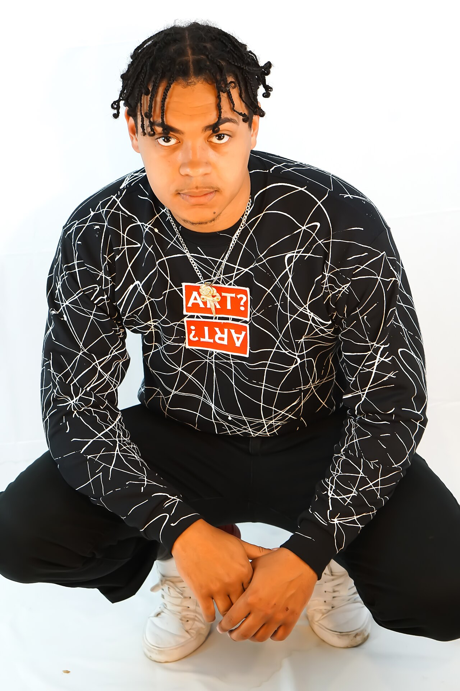
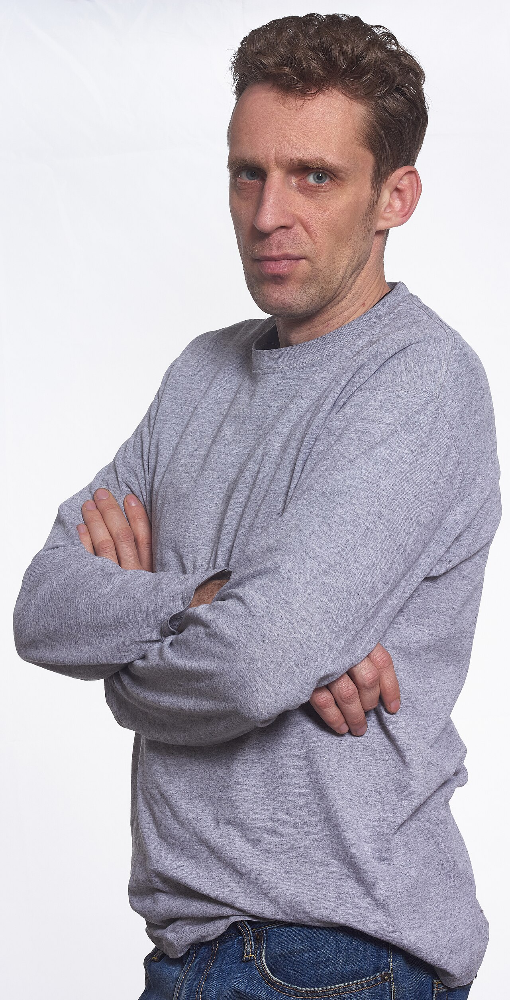

put the one guy's face on the other · dry · estimate 10 · 2 turn(s)


turn 1: pictures · swap_face_in_photo · asked which_face · I can swap one man’s face onto the other man’s photo. I just need to know which way around.
turn 2: pictures · swap_face_in_photo · ready · I’ll put the grey-shirted teacher’s face onto the crouching man, keeping the crouching man’s hair, outfit, and pose.
| parameter | value | source | from |
|---|---|---|---|
| which_face | Use the face from student-teacher.jpg to replace the crouching man's face in web-evan.jpg. | user | “Put the teacher’s face—the man in the grey shirt—onto the man with braids.” |
ok
fixes: student-teacher.jpg (person) is described in words; web-evan.jpg (person) is the one reference · model magichour · cost 5